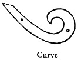
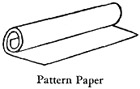
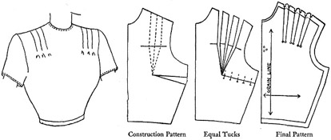
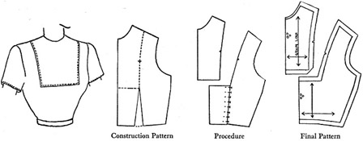
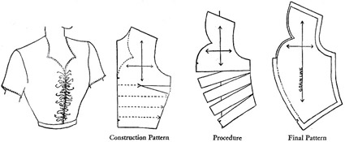
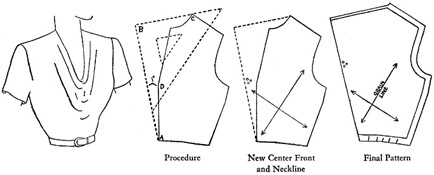
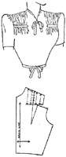

1942—Modern Pattern Design
by Harriet Pepin
Chapter 1—Pattern Designing
Description of Equipment
As the doctor, sculptor or artist should understand the purpose of various tools and equipment common to his profession, it is equally important that the patternmaker understands the purpose for which his equipment has been designed.
Most of the following articles may be purchased at art supply houses, tailor's supply firms or at the notion departments in retail stores:
- Triangle: The transparent right triangle is useful in pattern
making to "square" a corner. The two smaller points will serve
to establish a true bias from a vertical or horizontal line. Diagrams in
problems which follow illustrate how this is done.
In the study of geometry we learn that a triangle must total 180 degrees. This right triangle has two 45 degree angles and one 90 degree angle.  Tracing Wheel: This clever instrument saves hours of needless
labor of thread marking. It is used to transfer lines or symbols from one
pattern to another or from the final pattern to the muslin or fabric. When
the test muslins are being made by the designer, ordinary pencil carbon
may be used. When actual garments are being cut, white carbon or chalk
boards are used. These markings can be easily removed later.
Tracing Wheel: This clever instrument saves hours of needless
labor of thread marking. It is used to transfer lines or symbols from one
pattern to another or from the final pattern to the muslin or fabric. When
the test muslins are being made by the designer, ordinary pencil carbon
may be used. When actual garments are being cut, white carbon or chalk
boards are used. These markings can be easily removed later. - Carbon Boards: A suitable carbon board can be made by purchasing
a 24 × 36 sheet of pencil carbon from an art supply house. This should
be laid, face upward, upon a similar size piece of heavy cardboard or ply
board. Then a length of cheese cloth is laid over and securely fastened
to the back of the board with gum tape or thumb tacks. The cheese cloth
keeps the carbon paper from tearing or wrinkling and will prolong its usefulness.
A chalk board is made by purchasing powdered chalk, moistening it with water and "painting" several coats upon compo, paper surfaced board. This is then covered with cheese cloth. If white carbon is used, the board would be made in the same manner as a muslin carbon board. - Pins: Various sizes of dressmakers' pins may be purchased by the pound at the tailor's supply houses or notion departments of stores. The designer should have various sizes on hand for varying weights of fabrics.
- Pencils: A medium hard lead pencil, a rather soft lead pencil and an eraser should be in your tool kit. A red and blue crayon pencil is also useful for establishing lines of design and for correcting muslins. The blue is usually used for establishing the line and the red is used for all corrections during a fitting of the muslin. Some designers use various colors of tailor's chalk for the same purpose. Black "graphite" is sometimes used instead of lead pencil. These flat pieces may be sharpened by rubbing across sandpaper.
- Shears: Eight inch paper shears should be kept for cutting light weight paper. Heavy, professional weight shears are used for cardboard patterns. The fabric shears are kept for cutting muslin and will become dull if used for cutting paper.
- Transparent Ruler: This special ruler is found at art supply stores. It is divided into one-eighth inch squares. As so many measurements in pattern making are based upon eighths of an inch, this ruler comes into use conveniently. It is also valuable when establishing seam allowances on final patterns.
- Curve: The Dietzgen #17 transparent curve is especially valuable for shaping edges of curved collars, armscyes and necklines. Additional types of these curves are also valuable to have at the patternmaking table. They may be purchased at most art supply stores.
 Muslin: An
unstarched, unbleached muslin is used for muslin proofs for most garments.
This may be purchased by the bolt at a saving.
The weight and texture varies with garments being designed.
Muslin: An
unstarched, unbleached muslin is used for muslin proofs for most garments.
This may be purchased by the bolt at a saving.
The weight and texture varies with garments being designed. - Pattern Paper: A white, tough paper, such as that used in bakeries may be used for preliminary patterns in manufacturing plants and for even the final patterns in custom studios. This comes by the roll in varying widths at paper supply houses. It is best to use paper not too deeply colored because pencil marks do not show up as well. About a 150 lb. weight cardboard, purchased in sheets or rolls, is used for blocks and the final pattern "markers" in most firms. Such patterns would be used repeatedly.
- Square: The tailor's square is purchased at tailor supply houses. It is most useful when drafting the basic block patterns from measurements. It has varying units of measurement, such as fifths, sixths, thirds, as well as the normal measurements of an inch found in an ordinary ruler.
- Tapeline: It is wise to purchase a good tapeline. Cheaper ones may stretch or shrink. Some are even inaccurately marked. It is also wise to check all your measuring instruments before starting to work out the problems presented in this text. As the flexible tapeline is used to measure a figure or a model form and the square and ruler are used to locate similar measurements when completing the pattern, discrepancies would lead to disappointing results.
- Curved Stick: This tool is constantly in use by tailors, and it proves useful at the dress designer's table when establishing curves of revers, or when adding flares to gored skirt sections. It is marked for inches and fractional parts of an inch as a ruler would be.


Model Forms
Some sort of a model form is needed in the designing room. Standard size forms in various sizes are used by designers in manufacturing plants. Custom dressmakers may have several model forms and then pad them up according to the measurements of certain customers. The small scale form is used in many schools to save time and muslin. As long as it is ideally proportioned, it is quite satisfactory for the student who is still studying methods for making patterns. Advanced students who are actually making patterns from which garments are to be cut would naturally need a full size model form. Forms made to personal measurements are particularly useful to hobbyists. However, when one has a carefully fitted foundation block pattern, the model form need not also represent actual personal measurements. It may merely be used as a guide.
A professional, standard size model form represents the SIZE of the finished garment, not the dimensions of the woman who may wear that size. Dress form measurements are garment measurements. It is a "mold" for a shapely dress. If we say, "I wear a size 16," we actually mean that the size 16 dress, made from measurements taken from a size 16 dress form, will fit in such manner as to provide freedom of movement and a trim, smart fit. Twenty women might line up—all of whom might find a standard size 16 dress to fit them comfortably with no apparent need for alterations. But, if you were to carefully measure each of these women, probably none of them would have measurements identical to the standard size 16 model form. Each of them might comfortably wear a size 16 dress, and, in fact, be somewhat flattered by so doing, as the garment would conceal some bad contour lines of the body.
Garment manufacturers purchase new model forms frequently. As years go by, the basic silhouette changes with fashion. Corset manufacturers are creating new silhouettes which mold the figures of women. For example—the silhouette of the "gay nineties" looks not at all like the ideal figure of today. During and shortly after the first world war the "boyish" figure was in vogue. Breasts were confined in brassiéres which flattened the figure. With the return of the fitted garments we have entered upon the "up-lift" era, with the slender waistline and hips, and the brassiéres support and emphasize the breasts. Hence, the designer depends upon the model form manufacturers to produce new forms which reproduce the "modern" silhouette. When a new form is purchased it is measured carefully and an entire new set of basic block patterns are made. All new dress designs will then reveal the latest ideal figure measurements.
There are also special model forms for special types of garments. Dress forms may be purchased in children's sizes, juniors', misses', women's, and stout sizes. Special sizes, called "half sizes" in stores, are also available for the dress industry. Then there are coat and suit forms. A special suspended form is available for slack and bathing suit designers. The designer purchases the model form which is suited to the type of garment which he designs. If a wide variety of garments are created in a single studio, then a wide variety of special forms must be kept on hand.
In this modern day, a plastic material is being used to successfully produce "replica" models of individuals. Hobbyists find these models convenient means to designing their own wardrobes.
These forms may be quickly draped with muslin and then this muslin may be used as the basis for making a cardboard personal sloper.
Prepare the muslin as shown at right to provide for the neck curve and then smooth it gently over the front and back as indicated in the Figs. 1 and 2. The arrows indicate how the muslin should be worked into position. The excess fabric is folded into position to form a basic waistline dart. When the back and front have been draped carefully, with the grain of the fabric placed as indicated, use a red pencil and mark the seams on each section. Also mark the edges of the folded darts. Remove the muslin from the model, cut away excess fabric outside of the red lines, and within the dart areas. Pin the front and back sections firmly to a heavy kraft paper or manila weight cardboard, trace around them and you will have a personal block pattern which reproduces the exact curves of the figure.
NOTE: It is important, when making personal slopers, to place the position of the side seams, shoulder seams and darts correctly. See page 67 which shows the ideal positions for these seams on varying types of figures. This quick method should be used by readers who have had experience in using commercial patterns and who recognize the ideal position for construction seams.
At this writing there are no set measurements for any certain size garment. In time the industry may finally adopt a basic set of measurements which will be based upon a survey made of women's figures—a special governmental project. In the meantime, each designer will continue to believe that his special set of measurements are the only perfect ones in the market!
This text has been written with the assumption that the reader will work out problems with the aid of some kind of model form. It will at least serve as a basis for studying the effect of proportion and line as they would appear when the garment is worn.
Analysis of the Feminine Silhouette
Because the feminine figure is a mass of curves, both convex and concave, the pattern designer becomes aware of the importance of learning how to produce simple patterns which will accomplish two things, namely:
- Shape and fit the garment to conform to the curves.
- Introduce additional design interest or drapery which will improve the silhouette, but which will retain a beauty in line and form in any finished silhouette.
Study the accompanying sketches carefully. From the front view, notice how the fabric must be shaped to fit the curve at the base of the neck. Observe how the shoulders slope gently downward away from the neck towards the arms. Hence, it is essential that the pattern have such shaping.
The arm socket also requires a curved shaping line and then the figure tapers inward to the waistline. Then, from the waist downward, the silhouette curves outward again to form the width of the side hip.
Although the nude figure tapers inward again to form the thighs, the model forms do not—except those designed for making slacks and bathing suits. As the model form is a mold for a garment, and the skirts must provide walking room for the limbs, most model forms are designed to fall straight downward or may flare very slightly to the lower edge. Of course, many times, the silhouette of the skirt may not only provide the necessary walking room but considerably more as well, as is naturally the case with flared, pleated or gathered skirts.
Study the feminine figure from a profile, or side view. Again, you will notice that the back neck requires a less intense curve to bring the fabric around smoothly. From the base of the neck, the silhouette curves outward gently to form the shoulder curves. This is a high, shallow curve in the ideal figure. In mature figures, additional deposits of flesh may exaggerate this line to form the "dowager's" hump. Then notice that the ideal figure curves into a "compound curve" down to the waistline. Like the sides, it again swings outward to define the silhouette of the back hip or buttocks. Observe that the back hip is slightly larger than the side hip line.
Now observe the front portion of the figure from the profile view. From the shoulders the silhouette line slopes outward and downward to form the highest curve of the bust, and then once more dips inward in a compound curve to the waist. In mature figures this is another point where flesh may accumulate excessively. From the waistline downward, the silhouette should drop practically straight to the floor. In junior figures, if the waistline is extra small, the abdomen appears more prominent. For such types of figures, certain basic principles of cutting are used to actually provide for a slight shaping at this point. And, likewise, certain styles of skirts will permit such shaping and they prove to be best adaptable for such types of figures. From a profile view, walking room must also be provided in the silhouette.
The three points which divide the figure are the bust level, waist level and hip level. These divisional points are of vital importance to the pattern designer. You will read much about them in this text.
Principles of Pattern Making
Pattern making is an art. It is the art of manipulating and shaping a flat piece of fabric to conform to one or more curves of the feminine figure. Because the figure must be free to assume many different positions, to walk, sit or run, the pattern is designed with that thought in mind also. The perfectly designed garment should be equally beautiful when the wearer is standing or sitting or in motion. Clothing which is designed for some certain purpose, such as skating or swimming must be "functionally" designed, with its purpose in mind. Such clothing may be so designed as to give the figure greatest beauty while in motion.
The study of pattern making involves a combination of three basic factors, namely:
Technical methods of procedure for making the pattern with the use of the modern block system. These steps of procedure are common to the making of almost every pattern. With a little careful study and practice they are easily mastered and become the foundation of all pattern making.
Craftsmanship is an essential to good pattern designing. It is the ability to do something neatly—the capable use of the hands—to produce any article. To some people this may be a natural trait. In others this desire for perfection must be cultivated. But it may be acquired through constant practice and painstaking effort. Most public schools cultivate craftsmanship ability in young children through classes in wood working, basketry or drawing. The pattern designer must learn to work with speed and accuracy. A perfectly rendered pattern may become the basis for cutting hundreds of garments in one operation. If it has been carelessly rendered, with symbols lacking, seam allowances carelessly measured, it may cost the manufacturer thousands of dollars in returns.
Artistry in pattern designing is clearly revealed in the muslin proof. At that stage the designer sees his paper pattern design actually draped upon the curves of the model form or the individual. His artistic sense will be manifested in well proportioned lines, in carefully placed darts, in the spacing between pleats and tucks. An artistic pattern maker is paid well for his talent. He may take a badly proportioned sketch for a good idea and, through his artistic judgment, he may produce a pattern for a garment which will be a great improvement on the original idea. Or, if he lacks artistic sense, he can make an ugly garment from a beautiful sketch of the idea. It is for this reason that most modern designers today learn pattern making. It gives them a deeper insight into their creative work and, if the pattern maker is lacking in artistic sense, they can advise him regarding the final proportions for the finished garment.
Definitions of Patterns
- Blocks:—sometimes called "slopers," "basic or foundation patterns"— are usually made of 150 lb. weight cardboard. They are generally made by drafting from the measurements which have been carefully taken from an individual or from a standard size model form. Some designers make their blocks by draping muslin upon the model form and then transferring the outline upon the cardboard. Either method can be used. Directions for measuring and drafting basic patterns are given on page 56 in this text.
- Construction Patterns: are the intervening step between the
block and the finished final pattern. They are usually made from light
weight, tough, pliable paper. Some designers use muslin for this purpose.
In some more complicated designs, two construction patterns are needed
before the final pattern is made.
Blocks and construction patterns usually do not have seam allowances. - Final Patterns: (in factories they are sometimes called "markers")
are the finished patterns for a design from which the trial muslin or even
the final garment may be cut. When a pattern maker has become experienced
in his work, he may, for the sake of speed, use his final pattern without
a muslin trial. This fact is especially true when sections of the garment,
such as the skirt, sleeve and back bodice are being cut from patterns which
have been used previously in other garments. He may make a muslin trial
proof of the new design which has been developed in the bodice front section
only.
Seam allowances are carefully allowed on all final patterns. Symbols which indicate darts, grain of fabric, et cetera, must also appear. In large plants, once a final pattern has been completed, it leaves the hands of the pattern maker and is put to use in the cutting department. The symbols on the final pattern tell the cutters how to lay the patterns upon the fabric.
Routine Procedure
The steps of procedure given in this text are complete and detailed. Naturally, the dressmaker who is making an individual model gown may employ the use of many short-cuts and time-savers. She may, with experience, even use a construction pattern as the basis for making a muslin proof which will be tried upon the customer. When it has been checked for artistry in proportion, she may cut the final garment directly from the muslin. These time-saving methods come with experience—with a thorough working knowledge of pattern making and designing. They are not recommended to the beginner.
In the first few problems, detailed steps of procedure are given which, with the aid of accompanying diagrams, will show you just how to proceed. When you have had experience in making several simple patterns for bodice fronts, the instructions are less detailed and the reader can recognize the procedure by reading the diagrams, just as a carpenter learns to read a blue-print from the architect. Sketches and diagrams shown in the back portion of the volume may appear to be complicated but, once the reader has carefully studied the text material previous to those pages, they will be easily understood.
The following problems are devoted to the study of simple functional control darts. You will learn how they may be shifted from one basic position to another without destroying the original fit. Following these are others which show you how to employ the use of drapery, shaping seams and tucks instead of darts and yet retain fit in the garment. Without the intelligent use of these first basic principles, your garment designs will not have STYLE.
These first few problems apply to the shaping of the fabric for the curve of the bust. Later, these same cutting principles will be applied to other sections of the garment. Finally, you will use them to produce a wide variety of garments all of which must be cut to flatter the feminine figure and to provide close fitting in certain areas. The position of the grain of the fabric has everything to do with the hang of a garment and its durability with repeated wearing and cleaning. Therefore, throughout the study of pattern designing you will be reminded of the current position for the grain of the fabric when the muslin is made. Because the simple dart controls the shaping of the fabric to the curve of the body, it is referred to as "control dart."
All sketches have been made simply, so that you may clearly see the problem at hand. As this study is devoted to the cutting rather than the styling or ornamentation of garments, little trimming is shown in these sketches.
The Shoulder Dart
In this problem, you will study the method used for shifting the control from one location to another. For the sake of beauty in design the designer finds it preferable to place the control dart in one position in one pattern and in another position in the next. This may be accomplished easily.
Original foundation slopers provide for a single dart which extends from waistline to bust point.
Waistline Control Block (or Sloper)
If the reader wishes to experiment with these pattern cutting principles explained in this first chapter, remove this page from the book, cut out the pattern on the lines. Trace around it on medium weight cardboard so you may produce a practical sloper pattern.
In Fig. 1 the dart extends from the shoulder seam to the bust point. Your problem is to shift the dart from the waistline to the shoulder seam and to complete a final pattern and muslin.
Read Each Step Carefully Before Proceeding
1. Lay your cardboard waistline control sloper on a piece of white construction paper and trace around the pattern with your hard lead pencil.
2. Lift your cardboard sloper away from the tracing. Observe the opening which represents the area of dart at the waistline
3. Draw a dotted line across bottom of this dart as shown in Fig. 2.
4. Use paper shears and cut out this new construction pattern, but do not cut out the dart Merely cut along the dotted line which you added.
5. Fold over the dart into closed position by bringing two lines together. Your pattern has a bulge at the bust point. Pin dart over temporarily as shown in Fig. 3. Place pattern up over the model form.
6. Pin the pattern up to the model form, starting with the shoulder—the center front and then under the arm. (Don't be afraid to stick pins into the form, that is what it is made for!)
7. Observe sketch once more. While construction pattern is over model form, lightly sketch, with your blue pencil, a line extending from center of shoulder seam down to bust point. (Fig. 3.)
8. Remove construction pattern and unpin waistline dart momentarily. With your red pencil and ruler, correct your first blue line to a straight, clear line. Note how line appears to tip inward towards point of bust
9. Re-pin waistline dart into closed position permanently.
10. You are now ready to shift dart from its previous position at the waistline into the new shoulder position, as shown in your original sketch. With your shears slash down the new red line, starting from the shoulder seam. (Fig. 4.) Inasmuch as the dart must extend to the point of the bust, you will slash to that point.
11. Flatten your pattern upon the table, leaving the waistline dart pinned. Notice how the new shoulder dart spreads open as the pattern flattens. The provision for the control has been shifted from the original waist line position to the shoulder.
12. YOU HAVE COMPLETED THE FIRST STEP IN PATTERN MAKING AND ARE NOW READY TO MAKE THE FINAL PATTERN.
Making Final Pattern from Construction Pattern
1. Select another piece of pattern paper.
2. Spread it flat upon the table.
3. Lay the construction pattern upon it and pin them together by sticking the pins vertically into the table.
4. With the aid of your transparent ruler, trace around the construction pattern with your lead pencil. Lift construction pattern and lay it aside.
5. Your tracing represents the new final pattern which provides the control in a shoulder dart. Because it is a final pattern, it still needs completing.
6. Complete the open end of the shoulder dart as shown in Fig. 5. Due to the sloping seam of the shoulder, a jog appears at the opening of the dart. Extend line B-C to a point which is the center of the dart opening. From point A, bring a ruler line up to meet that first line
By completing the edge of the dart in this manner you will find, when you assemble your muslin proof which will be cut from this pattern, that it will provide a perfect edge to the shoulder seam when the dart has been folded over and pinned into position.
Completing Final Pattern
You will recall that no seam allowance was provided in the sloper from which you made your construction pattern. As none was added to that construction pattern, it must be provided at this point. All final patterns should have seam allowances.
Seam allowances are not standardized in the garment industry. They are varied according to the weave of the fabric being used or the selling price of the garment. Higher priced garments usually have generous seams to facilitate alterations. For the sake of uniformity as you study, make these seam allowances on all patterns: 3/4 inch on all seams except the neckline which may be 1/4 inch only.
Seam Allowances
1. With the aid of your transparent ruler, add 3/4 inch seam allowance to all edges except the center front and neckline.
2. Add 1/4 inch allowance at the neckline. (Fig. 6.)
Pattern Symbols
1. Mark and cut a square notch at the edge of the dart.
2. Mark three circles (punch holes if desired) near the center front edge to indicate that the pattern is to be laid on a fold of fabric at this point.
3. Mark circle or punch hole to show tapering point of dart.
4. With your triangle used as shown in Fig. 7, draw the arrows which
will show position of the vertical and horizontal grain of the fabric when
using the pattern to cut the muslin trial proof.
your triangle used as shown in Fig. 7, draw the arrows which
will show position of the vertical and horizontal grain of the fabric when
using the pattern to cut the muslin trial proof.
Checking Final Pattern
Any final pattern should include, where needed:
- Corrected seam edges at dart openings.
- Seam allowances as specified.
- Grain line indicators.
- Circles or punch holes indicating fold.
- Punch hole or circle indicating end of dart.
- Notches indicating edge of darts.
- Additional notches showing various sections to be joined together at seams. (Not required in this problem.)
CUT OUT THIS FINAL PATTERN WITH PAPER SHEARS.
Cutting the Muslin Proof
Architects, sculptors and designers know the value of making a preliminary proof for a design in less expensive media or to a reduced scale. Time and money is saved in so doing. Muslin is the trial medium for the costume designer. It is used extensively in better custom shops and in all manufacturing plants. The muslin should vary in texture according to texture of the actual fabric which will be used. Furriers use a coarse, heavy canvas which drapes much as a fur pelt would. Lingerie designers use a thin, soft muslin which has a similar draping quality to fine silk. Students of costume design use a medium weight, unsized or unstarched muslin. Most muslin is particularly adaptable for fabrics of average draping qualities.
1. Press the muslin free from wrinkles, pressing with the lengthwise grain of the fabric.
2. Lay the pattern lengthwise on the muslin unless otherwise shown by indicators.
3. Make sure, when laying a center upon a fold of the muslin that the edge of the pattern is up close to the fold of the fabric. Fig. 8.
4. Pin pattern down firmly to muslin while flat upon the table.
5. Cut around pattern closely, with fabric shears resting upon the table. Keep shears sharp! Do not pick up fabric when cutting. Work flat upon table as much as possible.
NOTE: A special pattern-making table is an important item of equipment. It should measure at least 36 X 50 inches, of waist height or slightly lower. The top should be two-inch soft unfinished pine with all seams carefully glued. The soft surface may be sandpapered smooth after becoming worn from pins and tracing wheel. Some tables have a replaceable cork covering.
Tracing the Muslin Proof
All symbols appearing on the final pattern should be traced upon the folded muslin in such manner as to have the carbon lines on one side of the muslin proof which will be opened and draped over the model form. At this point, the muslin has been cut out, but is still pinned to the final pattern. Proceed as follows:
1. Lay the pattern, with muslin downward, upon the carbon tracing board.
2. Using your tracing wheel, carefully trace along the original edges of pattern (before seam allowance was added).
3. Trace along both edges of shoulder dart.
4. Trace short indicating lines showing notches.
5. Trace grain indicators.
6. Remove pattern from the double muslin. Keep edges of muslin together carefully by placing a few pins.
7. Place muslin upon tracing board, with traced side upward. Follow these traced lines with tracing wheel. Tracings should now appear on one side of complete bodice front.
The "visible" method of pinning muslin proofs permits the designer to correct the angle of lines while the muslin remains upon the model form.
YOU ARE NOW READY TO ASSEMBLE MUSLIN PROOF.
Pinning the Muslin Proof
The professional method used for assembling muslin proofs provides speed and accuracy. As far as possible, work with muslin flat upon the table. Otherwise it is easy for the seam edges to slip between the fingers.
1. Fold in darts by bringing two traced lines together. Place pins horizontally as indicated in Fig. 10. Note position of pin heads. Place pins 1/2 inch apart.
2. Because the seam allowance added at curved neckline actually reduces the measurement of the neckline, it is necessary to snip tiny slashes at intervals of 1/2 inch as indicated in Fig. 10. They should not extend beyond tracing line. This will permit the muslin to fit snugly around neck of model form.
You are now ready to observe the results of making your first pattern by draping the muslin proof upon the model form.
Criticizing Your Muslin Proof
Place the muslin up over the model form in such manner as to make the center front fold rest upon the center front of the model form. Because you have allowed seams, fold the shoulder and side seams under on the traced lines and pin these traced lines so that they will coincide with the seam lines on the model form.
Observe the results of your first effort. You may find that both sides of the muslin do not fit equally. This frequently occurs, even in new model forms. One seldom finds a model form in the industry which is entirely perfect. This imperfection is due to the variation of the linen fibres found in the craft linen which is used for the covering. In the process of manufacturing the model forms, the linen is sewed over the foundation and then the entire form is thoroughly sponged with water and allowed to dry. This induces the linen to shrink and eliminates the small wrinkles which might otherwise appear. It is during this process that the linen may shrink a little more in one place than in another and cause the irregularities. Should you find this to be true, in the future, use the side of your model form which showed the best fit as the basis for all your muslin tests whenever possible.
It is at this point that the criticism of an instructor becomes important. The steps used to shift the position of the dart are mechanical but the artistic results of this procedure must be determined. The angle, or position, of the dart should appear to follow the silhouette line of the upper portion of the body in a parallel position.
RULE ONE
A simple control dart may be shifted from one position to another position without changing the fit of the final garment. Only the shape of the pattern has been changed.
Making the Shoulder Control Sloper
When the muslin has been tested, a cardboard sloper should be made. This is easily accomplished by tracing around the construction pattern developed during the completion of this final pattern. When finished, this new cardboard sloper should resemble Fig. 5, page 9, except that the area outlined by the edges of the dart should be cut away. This new sloper can be used as the basis for making many new designs later.
If the angle of the dart was adjusted in the muslin, similar improvements should appear in the sloper.
This new sloper would be called the shoulder control sloper. In basic measurements, it should be identical to original waistline control sloper. If the dart areas are closed in each, and one is laid over the other, they should also appear identical in form. Any discrepancies would be the result of careless tracing or cutting of the patterns.
In your first problem you learned one of the most important principles in professional pattern design, namely: shifting the control. You learned that the size and fit of the finished garment need not be altered by this process. You learned that the degree of the bulge in the new final pattern remained the same as that provided in the original basic sloper, or block. You also learned that, to shift the control, the new dart must extend to the bust point.
To give you further opportunity to study these facts, you will complete the final patterns and muslins for the following problems, all of which are based upon what you have learned. The same steps are used to complete these new problems. If you become confused, turn back to the instructions given on the foregoing pages and refresh your memory. When you have completed a few of these problems, you will have learned the routine.
Underarm Dart
This problem places the new dart under the arm. The underarm dart is used when the bodice of the garment is being decorated in such manner as to prohibit the use of the vertical waistline or shoulder darts without distracting from the design interest.
Note that the sketch shows this dart extending from the underarm seam to the bust point. This unpleasant feature can be remedied, as you will learn in another problem. Study the procedure illustrated in the diagrams, produce your final pattern, complete with symbols and seam allowances and cut your muslin. When the muslin is draped and pinned upon the model form, it is ready for criticism.
Making the Underarm Control Sloper
As the underarm dart makes it possible for the designer to have a working area in the center front of the construction pattern, and a basic sloper which provides for the control in that position is convenient, you will now make a cardboard sloper from the construction pattern produced in this problem. It should resemble the waistline and the shoulder control slopers except that the dart will be placed under the arm.
You will then have the three basic slopers which will be used for producing pattern designs presented in subsequent problems. Keep these slopers on hand for use when the diagrams indicate that any certain one is needed.
NOTE: Keep your muslin from this problem so that you may compare it with the muslin from a later problem. Through such comparison can be learned many important facts that result in superior fit in garments.
Shortening a Dart
Although it is necessary to extend the dart to the highest point of the curve to effect the change in position, the finished garment is improved by shortening the dart in the finished pattern except in cases where an extra close fitting garment is desired and, in such cases, the long dart is shaped to conform to the actual contour of the figure. The simple shortened dart provides for a little extra "ease" which is desirable in the final garment.
Use the construction pattern from your previous problem and trace out a new final pattern. Shorten the dart as shown in the diagram at right:
- A to B equals 3 inches (new length of dart).
- B to C equals A to B.
- Correct underarm seam from C to D as indicated in accompanying diagram.
- Complete final pattern and muslin and observe the finished result.
NOTE: The appearance of the seam will vary according to the angle of the seam or the dart itself or the degree to which a dart is being shortened.
The French Underarm Dart
In the foregoing problem, you shortened the simple underarm dart to make it less conspicuous. A great many experienced designers place the control dart under the arm, but at an angle, pointing upward towards the bust, rather than across tn it.
Because this plan was introduced by the French designers, it has been called the French dart. This position makes it less conspicuous and at the same time, from a profile view, it flatters the wearer as it creates the illusion of her having a higher bust line than she may have. Therefore, this dart is frequently found in women's garments.
Follow the same procedure which you used in the previous problems to make the final pattern. Notice that the angle of the dart involves a different correction of the final underarm seam. Complete the muslin proof and observe results on the model form.
NOTE: A sloper might also be made from the construction pattern, but this type of dart is seldom used as the basis for a new design. It is a design in itself.
Compare the underarm seams in the muslins made from the simple underarm dart and the French dart. Note the resulting change in the grain of the fabric in the latter. The grain in the French dart muslin proof is straight at side seam. Many designers feel that the garment will retain its shape longer when the French dart is used.
RULE TWO
A dart may be placed in any position as long as it starts from a seam and points to the highest point of the curve being considered at that time.
The Dart-Tuck
As a substitute for the simple shortened dart, in some instances, the dart-tuck is used. It is so named because it tapers like a dart but ends abruptly, like a tuck, or pleat. If you will scan the pages of fashion magazines, you will see the dart-tuck used frequently. The soft drape which is produced softens the figure and it is particularly pleasing when used in groups.
Use the sloper indicated and produce this muslin is shown by accompanying diagrams.
NOTE: As a student of pattern designing, it is important that you observe these principles as they are being currently used by professionals. In a separate scrap book, paste clippings showing sketches or photographs of finished garments which illustrate the use of these principles for shaping the fabric to the figure. This additional research will do much to further your appreciation of the varied use of basic, simple principles in high priced garments found in our stores today.
RULE THREE
Basic control darts in finished patterns may be shortened or made to end abruptly in a dart-tuck to soften immediate curve area.
More Information About Patterns
By completing the foregoing problems you mastered an important principle used in the art of producing a pattern, namely: the possibilities for shifting the control to a new position. You learned that this might be done to conceal the simple dart or to place the dart in a position which would harmonize with other lines of design.
The three basic positions for the control are: waistline, shoulder and underarm. Therefore, slopers which provide the simple control in these three basic positions have been made for future use. For speed in producing new designs most designers keep such slopers at hand.
Your next few problems will demonstrate the possibility of developing design interest with the use of these basic positions for control. These problems will also teach you the procedure used in such instances.
As has been mentioned previously, fabric is the medium of the costume designer. He must have a thorough understanding of the limitations of his medium. Taffeta and tweed are adaptable to certain means of control; jersey and chiffon another. As a student of Modern Pattern Design, you will soon learn that some principles of cutting offer possibilities for the use of crisp, bulky fabrics, while others will appear appropriate when handling soft fabrics which have fine draping qualities, such as velvet or silk crepe. Hence, a thorough understanding of principles of pattern making will give the designer more breadth and scope in his work.
But the texture of the fabric is not the only point of consideration. As a great many fabrics are printed, stripes or plaids, the designer must manipulate that fabric intelligently. An artist—a fabric designer—has already contributed his talent to the fabric, and the costume designer must carry on from that point. We see many examples of failure on this important point. We see examples of the use of striped fabrics which have been manipulated poorly—so poorly, in fact, that the figure of the wearer is actually distorted when the garment is worn. Hence, a thorough understanding of the adaptability of certain patterns to certain fabrics is equally important. This is particularly true in the case of stripes and plaids. The majority of striped and plaid fabrics are woven in design. By carefully observing the grain of the muslin when the pattern is being tested, you will learn to visualize how such patterns would appear when produced in a stripe or plaid. To illustrate these facts, in some cases, you will be asked to mark up your muslin into an effect of stripe or plaid so you may see the results more clearly.
Never lose sight of the fact that the ideal feminine figure has ideal proportions. It is a work of art in itself. If you are to contribute your artistic talents to furthering this beauty, you must not distort the natural figure. It is quite true, additional drapery of fabric is added to produce a fashionable silhouette which does not actually follow the natural contours of the feminine figure, but this new silhouette must also have pleasing form and line.
As you proceed further in this study, you will learn that control, aside from being a means to shaping the pattern, may be ingeniously introduced as a part of a complete design. The architect learns that doors, though decorative, must serve as a means to entering the building. He learns that although the winding stairway may be a part of the design of the foyer in the building, it must still serve as a means to ascending to the second story. The jewelry designer realizes that the intricate necklace must have a clasp. He may make that clasp the dominant point of interest, or he may make it a part of the design for the entire necklace and thereby reduce its importance. In later problems you will study the possibilities which pattern making offers for concealing the need for control within the design of the garment.
Dividing the Control
In the previous muslins the single dart was used to provide the necessary control for shaping the bodice front over the curve of the bust. If you will take the muslins from these finished problems and mark each one with alternating red and blue pencil stripes, re-pin the darts into position and drape them over your model form, you will readily see how each would appear if such a garment were to be made from a prominently striped fabric.
When designing garments for individuals who are not fortunate enough to have perfect proportions, the size of the dart might be unnecessarily increased and the distorting stripes would become increasingly unpleasant. It is for this reason that the experienced designer may see fit to divide the control, placing a portion of it extending from one seam and the remainder from another. When you select your clippings you will see many examples of this fact.
From the following diagrams, produce this pattern which provides for a division of the control between the shoulder and waistline. Also notice that both darts are then shortened to leave the area immediately over the bust quite plain. Mark up your muslin carefully, placing the lines on the actual grain, and then produce the muslin for trial upon the model form. Observe the improvement gained in the method.
Notice that the underarm control sloper is selected as the basis for this pattern as the new lines are to be introduced at the waistline and the shoulder.
NOTE: Women having extra large bust measurement or exceptionally small waistline for the normal bust would necessarily have a personal sloper providing an abnormally large amount of control. This principle of cutting, with variations which you will soon study, is particularly adaptable to such types of figures. Not only does the fabric manipulate more pleasingly but the lines produced by the darts have a slenderizing effect.
Remember that "control" is merely a term used to refer to the means which are being employed to shape the fabric to conform to the many curves of the body. Once you have become familiar with the many ways in which control may be provided, you will more readily see the possibility for distribution of the control to insure the best "hang" to the fabric.
Substituting Single Dart with Multiple Darts
For the sake of design interest, control may be divided into two or more small darts instead of one. This proves satisfactory for individuals having abnormally large bust development. In the above sketch this method is illustrated with the additional use of dart-tucks. If the medium being used lacked draping qualities, a group of shortened, simple darts could be used. Note that the soft drapery which appears at the end of each dart-tuck invites interest. Hence, this design would lessen the importance of an unfavorably low bust line by inviting the eye upward to the drapery.
The procedure for rendering these designs is quite familiar to you. Note carefully the appearance of the corrected seam edges in the final patterns.
Multiple Darts at the Waistline
The use of dart tucks in this position, extending from the waistline, is best suited to the junior figures having flat diaphragms and firm bust line. When control is used in this position for mature figures it is usually handled as simple gathers.
The spacing between such waistline darts can do much to create illusion in form. If they are placed parallel to the center front and to each other, it will create the impression of a larger waistline. But if the first line is made parallel to the center front and the next two are tipped outward slightly at the top, the effect of a tapering waistline will result. To observe the results, this problem could be worked out for half the front—a left and a right. Make one pattern with the vertical darts and the other with the darts 1/8 inch wider at the top. Place the two halves upon the model figure and observe the difference.
NOTE: In manufacturing plants patterns are made for ideal figure proportions and the rules of spacing become quite standardized. In custom shops, the pattern designer is constantly endeavoring to correct the appearance of badly proportioned figures and these fine points of spacing are put to constant use. With continued experience he can visualize the need for them by studying his customer's figure.
RULE FOUR
Several darts may be used instead of a single dart to produce more design interest without changing fit of a garment providing darts are so placed as to replace basic control dart.
Shirring or Smocking Replacing Single Dart
Another way to vary basic control darts is by using drapery or gathers. These may be styled further with ornamental shirring, smocking etc. If lines for slashing are kept 1 inch from neckline and armscye, a smoother fit will result around those areas in the finished garment. Plan muslin for 2 inches of shirring. Use needle and thread.
RULE FIVE
Gathers, shirring, smocking or drapery may be used instead of a basic dart providing the fabric is pliable enough to give good results.
Spacing in Design
When the design for a garment provides for the use of divisional lines, artistic proportions are essential to beauty. First, it is necessary to establish beauty of form. Then this form must be divided into beauty of proportion. A picture, to be beautiful, must have a frame of proportionate width. A door may have excellent proportions, but if it is divided into smaller areas for the sake of further beauty, these divisional lines must be proportionately spaced to the dimension of the door itself.
In costume designing the silhouette represents the basic form being divided. Yokes, plastrons, panels, pleats and other sections are produced by divisional lines which must be artistically spaced. Once the divisional lines have been established proportionately, they may be ornamented further to complete the design interest in the garment. Color is another factor to be considered, but that is not included in this text.
A study of your model form will be helpful at this point (see page 56). From a front view, notice that the vertical divisional lines on either side of the center front fall directly over the highest curve of the bust. When the figure is of perfect proportions, this placement of the vertical divisional seams proves pleasing. But, if one is designing for the imperfect figure, then slight adjustments would be necessary to create an illusion of beauty. Observe the model form from the back view. Note that the vertical divisional lines fall directly over the highest curve of the shoulders and over the highest curve of the back hip.
Study your model form to mentally visualize horizontal lines. Think of a horizontal line being placed directly across the highest curve of the bust. Better still, pin a narrow piece of muslin across the figure at this point. Pin another across the hip, on a level with the highest curve of the hip. Study the result. Now measure, with your tapeline, from the center of the shoulder seam down to the tape. Measure from the tape down to the waistline. How do they compare? Measure from the waistline to the table. Measure the distance from the waistline to the hip level. What fractional part of the whole (an evening length skirt) is this smaller area?
From the center front, measure the width of the front panel across to the bust point. Measure the side area on the same level. What are their relative proportions to half the entire front width?
If you will figure out these proportions with pencil and paper, you will probably see that simple divisional measurements, such as halves, quarters or thirds are not used. Instead, you will more likely find fifths, sixths, sevenths or eighths. The simple proportions are avoided because they are quickly apparent to the eye and would distract from the beauty of spacing.
Although, in a general sense, the body may be likened to a cylinder, when you view the model form from the front, or back, your eye does not see the entire half of the figure which is represented in our pattern of a bodice front or back. Near the side seam is an area which is lost to the eye. Hence, when you are establishing divisional lines, it is important to work directly over the figure at first. As you become familiar with the divisional lines, when they are on the pattern, flat upon the table, this should not be necessary. Horizontal lines, however, are seen clearly. Therefore, when using the horizontal lines for dividing the silhouette, proportions become increasingly important.
Note, too, that a true perpendicular line, drawn parallel to the center front will make the waistline look larger. This is because of the inward curve of the figure under the arm. Such divisional lines should be tilted very slightly toward the waistline to conform with this silhouette.
The printer soon learns that, to produce an artistic page, he must know something about space and mass. He learns that, when a bold face type is used, he must allow sufficient space around it to make it easy to read. It is the point of interest and the remaining smaller areas of smaller type must be proportioned to the first area. Hence, when you have divided the bodice into a yoke design, the tucks, trimming and other secondary points of interest which further divide that, or some other area, must be in accordance with the first proportions established.
Likewise, when you plan a series of seams which will divide a given area, and each of these seams is to be further emphasized by rows of stitching, or piping, for example, they must be set far enough apart to allow for the additional lines which will be produced from the added emphasis, or trimming itself.
RULE SIX
In dividing a given area, elementary fractional parts should be avoided—such
as halves, thirds or fourths.
fractional parts should be avoided—such
as halves, thirds or fourths.
The following sketches illustrate a study in bad proportions. Study them over and then decide the reason why none of them is perfect.
Control Under Yoke
This sketch shows the same design with the proportions corrected. Compare it with the sketches on the previous page. Your problem will be to render a pattern which has equally nice proportions. When the construction pattern has been pinned over your model form, establish the horizontal line which will form the yoke. Then establish the position of the center dart-tuck to determine the proper length which must be governed by the yoke line. Then decide the position of the two other dart-tucks which will be a problem in proper spacing. The group of dart tucks are then considered as a single unit of proportion. The procedure for making the pattern is shown in the diagrams.
Unity in Arrangement
In the above problem, because the yoke was styled with a row of visible stitching, it became the dominant part of your whole design. The dart-tucks became the secondary interest. In this sketch, both have been equally emphasized through styling and both have equal importance.
When several lines are being given equal importance in a design, it is essential that a feeling of unity be created between them. Otherwise, the design becomes a confusion of meaningless lines.
Study the accompanying sketch carefully. As the panel portion falls over the center of the body, it is not influenced by the silhouette of the body. It is therefore given vertical lines. To bring relationship between the upper section and the panel, the horizontal line is squared to this panel. But, the outer edges of the upper yoke do approach the edge of the silhouette and they are therefore tilted slightly to conform to the silhouette. This creates the feeling of unity between form and line.
Notice that the neckline has been made square. This gives greater emphasis to the panel portion through repetition. Now the focal point of interest has been brought to the center of the garment. By placing the dart tucks parallel to the edges of the panel we are bringing still greater emphasis to the center panel. And we have established a feeling of unity between the panel, the neckline and the dart-tucks. Together, they dominate the design. The upper edges of the yoke are lessened in importance but they serve to bring a feeling of unity between the design and the actual form of the figure.
Keep all these artistic fundamentals in mind as you sketch in your design while the construction pattern is upon the model form. They are essential to good designing!
RULE SEVEN
Unity in design may be achieved by giving each part of a design a relative importance to the whole.
Relationship in Design
In this problem, you will show relationship between the dart and the yoke. Because the dart is functional, it may be established first. Start line of yoke from the dart and work each way. Note that diagonal lines are more flattering than simple horizontal and vertical lines.
PRACTICE PROBLEMS IN YOKE DESIGN
The following practice problems illustrate variations in pattern making principles you have studied thus far. They also offer opportunity for further study in unity and relationship in design. If you see opportunity to improve them, do so. The diagrams will suggest your first step in the procedure.
Drapery in Design
In the foregoing problems you learned that gathers, or drapery might be used instead of a single dart to maintain control of the fit of the garment. You also learned that, when a yoke is employed, the control can be provided in the area between the yoke and the bust point. This control might take the form of a single dart, groups of darts, etc. In this problem, you will not only provide the necessary control in the form of drapery, but you will add additional bulk to the silhouette by increasing the amount of drapery beyond that provided by control.
Naturally, when additional bulk is added to the silhouette, the fabric being used must have the proper texture to permit this. The amount of additional fullness must depend upon the texture of the fabric. Therefore, we encounter a new problem in proportion. That is—the proportion of drapery which may be added to any portion of a garment.
A small amount of added drapery may soften the excessively large bust through the vertical lines which are created in the soft folds of the fabric itself. In other instances, a greater amount of drapery might be used to create the impression of a greater bust curve for the woman who is angular.
In this problem the drapery is added at the yoke seam and the lower edge, or the waistline, is not draped. First, the control is shifted from the underarm to the yoke seam edge. Then the additional slashes are made to produce the extra drapery where it is desired in the finished garment. Note that in so doing, the armscye, shoulder seam and waistline have been in no way altered. When you have gathered up this drapery which was provided by spreading the sections, you have a garment which still fits the model form in all the basic seams. The added drapery changes the silhouette but does not change the dimensions of the pattern itself, as far as basic figure measurements are concerned. Whenever convenient, the basic control is first shifted to the position of the drapery and then the additional fullness is added.
This is one of the most important principles of cutting used by designers. Mark your muslin into a plaid design so that you may visualize how this principle of cutting will affect the fabric grain.
By drawing a horizontal grain line on the construction pattern and then on the final pattern paper, you can observe what happens to the grain of the fabric. Note how notches are inserted to indicate where gathers will start.
The following problems will give you further practice in the use of this important principle in pattern designing.
Observe that the lines which have been drawn upon the construction pattern to locate position of the slashes have been drawn at right angles to the line of the curved yoke. Observe the result which is produced in the finished muslin. Such folds of fabric, produced by gathered areas, actually create lines which become a part of a design. If the slashes can be placed at right angles to the basic line, usually the results are pleasing.
Note how final pattern is notched to aid in turning the edge of the curved yoke seam allowance. This should be done in all such cases.
Note position of lines indicating added drapery. Also slashes in plastron section which aid in turning that edge for lapped seam.
RULE EIGHT
Additional fullness may be added to one side of a section of a pattern without affecting the dimension of the opposite side. Only the shape will be altered.
Compare this sketch with those previously illustrated. From appearances, it would seem equally feasible. Work out this problem. Mark your muslin for a plaid or vertical stripe. Observe results. A "pen and ink" design can be most disappointing when rendered in form!
Balanced Drapery
In the foregoing problems you added fullness to one side of the area only, and at the same time shifted the control to that same position. Many designs provide for drapery on both sides of some given area. In such cases the control may be divided first, and then the additional slashes made to give the extra fullness desired.
In order that you may observe the effect this method has upon the grain of the fabric, the muslin should be marked into a plaid design. The above diagrams will show procedure for completing the patterns.
Same method would be used for vertical pleats. Area between sections would be folded out of sight. Control would be laid under the last pleat.
RULE NINE
When adding an equal amount of fullness to opposite edges of an area, the grain line in the final garment will not be affected.
RULE TEN
When fullness has been added to any certain area, this fullness must be arranged and distributed in the final garment in exactly the same position as that used in the pattern to insure good fit.
Control in Yoke Seam
The foregoing problems have taught you that control may be provided through the use of simple darts, dart-tucks, gathers or drapery, multiple darts and dart-tucks. This problem will teach you a new principle of cutting—the provision for the necessary control in seams which are a part of the design itself.
This method of cutting is employed when garments are to be made from bulky or stiff fabrics which are not adapted to the foregoing principles. It is frequently used when the designer wishes to introduce a focal point of interest in the garment and he does not wish basic control darts to distract from the design itself. When creating designs for individuals, rather than for the manufacturer, this principle is employed because the designer need not consider the possible need for alterations.
In order that you may observe how the basic control is shifted to the seam which extends from the shoulder seam to corner of yoke, cut down that line first, flatten the pattern and then completely cut yoke away from body of the pattern. Observe the shape of yoke closely. Note that it extends to the point of the bust to effect this method.
Control in Plastron Seam
In this case, control shifts from underarm dart to lower plastron seam. Note that grain indicators are marked in construction pattern. Mark muslin into a vertical stripe. Cut plastron crosswise and remainder lengthwise. Observe results.
RULE ELEVEN
In order for a seam to substitute for a basic control dart, it must fall across the highest point of the curve being fitted.
RULE TWELVE
When designing patterns which provide control through seams, it is advisable to plan that the straight grain in both sections will fall across the highest point of the curve of the figure.
Control with Secondary Seam
This problem illustrates the use of one seam which serves to provide the control while the second seam is merely decorative. Watch your proportions! A slight correction may be needed to blend the curved line at point A.
Mark your muslin with horizontal stripes to study results. Can you suggest an interesting layout which might add further design interest? Trace over the sketch above and work out these preliminary ideas.
Lay the sections on this muslin as you would if cutting a dress of striped material. Observe what happens to the stripes in the area where the control is provided in the seam. Try your pattern with the center front and upper side sections crossways of the fabric and the strap portions on the bias. Again study your results. Can you work out a still better plan of lay-out ?
Observe that the lines of the design are based upon a curve. Hence, it becomes more difficult to use such a pattern for material which is designed on the basis of a stripe or plaid, because the design and the fabric lack relationship. This design would be satisfactory for using a three-way color combination of plain fabrics or a printed silk of floral design.
RULE THIRTEEN
Secondary seams may be used with basic seams which provide the basic control. They may be used to create emphasis by repetition or they intersect to complete a design.
Horizontal Center Front Control
In previous problems the control was placed at the shoulder, underarm or waistline seams and was shown as a dart, dart-tucks, gathers etc. On some occasions, the control is thrown to the center front in a seam placed in that position. As was the case in previous problems, additional drapery may be added if desired.
There are two types of center front control. First, the horizontal and second, the vertical. Each has its usefulness to the pattern designer.
The foregoing design shows the control shifted from the underarm seam to the center front seam and then drapery is added all the way down the front of the garment. If drapery is desired only through the immediate bust area and the diaphragm area left plain, the construction pattern would be marked for slashing accordingly.
PRACTICE PROBLEMS
The above designs illustrate further use of this principle. Notice the relationship shown in the blouse design through repetition of line in the neckline and sleeves. Because the darts complete the design, the width of the center front panel is narrowed.
The "bra" top for the bathing suit merely shifts the waistline control to the center front where it is distributed into gathers. The upper and lower areas of the bodice are discarded. The little strap hides the seam and shirring.
Vertical  Center Front Control
Center Front Control

You have learned through previous problems that one may shift the control to a horizontal position at the center front, on a level with the bust, and acquire a perfectly fitted garment. You have also learned that one may use gathers, tucks or darts as a means to design interest.
Another form is known as Vertical Center Front Control. It is seldom used in its simple form, such as the others, except in cases where the model is being made for an individual who has a flat bust and larger waistline in which the slopers would have much less area in the darts.
In this case, by using a model form of a youthful figure, you will readily observe that it would appear quite impractical to use it in this simple form. However, this problem is being presented in order to teach you how to make a Center Front Control Block which will be the basis of following designs.
The shoulder control sloper is used to make this pattern.
Read Each Step Carefully:
1. Label your shoulder control block as illustrated in Fig. 2.
2. Select a piece of pattern paper. Starting with point A, trace around this sloper as follows: A to B; B to C; C to D; D to E; E to F.
3. Keep your sloper flat down upon the tracing. When you reach point F, without moving your sloper, place point of pencil in point of the dart (Point X). Pivot sloper to the right until you have closed the dart by shifting point G over to point F which was the point where you discontinued tracing.
4. Complete tracing: G to H; H to I; I to A.
5. Lift sloper. Extend lines from A and AA so they intersect. Space between these points is length which has been added to center front. See Fig. 4.
6. Make seam allowances as shown in Fig. 5. Cut muslin proof and observe result. It becomes obvious that, in this simple form, there would be little beauty in this pattern. In a few cases, when a person has a flat bust and large waistline, it might be used. Following problems will show adaptations of this basic principle.
Adaptation of Center Front Control
In this design, the yoke resembles a collar, the control is placed in the center front and shirring is used to add interest to the design. These vertical shirrings or unpressed pleats are nicely adaptable to costume suits. Study the diagrams carefully before proceeding.
Read Each Step Carefully:
1. Make construction pattern by following procedure used in previous problem.
2. Sketch in the design for the yoke. Mark notches and establish grain lines.
3. Extend the line A-B as shown by dotted line equal to center front length of your shoulder control sloper. Extend the dotted line over to the notch in neckline which indicates the start of shirring, making a shallow curve.
4. Complete final pattern with usual seam allowances. Note notches and slashes necessary where yoke joins the body of pattern.
5. With needle and thread, gather up neckline until it is reduced to size of neckline on sloper. Attach the yoke by lapping and pinning.
6. Assemble patterns and drape muslin upon model form to criticize results.
NOTE: You may readily observe that this simple method of providing control might be employed in many variations. A simple band around the neck, a yoke with this fullness extending from it, or one of many other ideas might be used.
Likewise, additional drapery could be added for the sake of a fuller silhouette. In such cases, the method used would resemble that used in problems presented in previous lessons where the control is shifted into position and then, through the use of slashes to the waistline additional fullness is added. Watch for examples of variation of this principle shown in fashion magazines.
The woman with the highly curved chest will find variations of this style quite becoming. The soft folds of the fabric hide her defect and, if a collar is becoming to her also, the bodice may be cut from this principle and a collar attached at the neckline in the normal way. If the closing is also placed at the center front and a row of small buttons added, it will further the illusion.
Distribution of Center Front Control
The two designs illustrated on this page show variation of the use of a partial center front control which has been provided by the darts which extend from the neckline and are arranged in a pleasing fashion.
In some cases, you may find that instead of confining the fabric securely into darts, the designer may merely fold the fabric over to create soft folds. When the shape of the neckline varies, the darts should be arranged to bring harmony between the line of the neckline, or yoke, and the darts, which will be a secondary point of interest and should contribute towards the feeling of unity.
When you have completed these muslins, compare them with the muslin which you just made from instructions on the previous page. In the previous instance, the gathers are vertical, while in these designs, they radiate outward to the bust and are less slenderizing. In fact, these designs might have a tendency to emphasize the bust curve. Both reduce width of neck—they are generally flattering.
NOTE: If a design provided for a center front dart and two side darts, the portion which would be used for the center front dart would be pivoted to that position. The remaining unused portion of the control would be shifted by the slashing process.
PRACTICE PROBLEM
This design shows the possibilities for a variation in the use of darts extending from the neckline. If this blouse were to be a part of a costume suit, only the decorative portion of the neckline would be visible to the eye when the coat would be worn. When the coat was removed, the dart tucks would give added interest to the simple dress. Note simple method of producing this style of garment.
Cowl  from Simple Center Front Control
from Simple Center Front Control

The modern cowl neckline may be recognized as having been inspired from the clothing worn by the early Greeks. Their clothing was not cut and shaped to the body but their garments were merely several large pieces of cloth draped about the body. They were masters in the art of draping and created beautiful garments through this method.
Modern fashion has adapted this flattering means of draping the body. It is usually combined with fitted areas. Unless the medium being used is of such texture as to fall into definite natural folds, this principle of cutting should be avoided. Also, if the individual being fitted has an excess of curved lines in the body, it should be avoided. It is best suited to the tall angular woman.
There are two factors to be considered when using this principle of cutting, namely: The depth of the neckline, which results in the length of line produced by the folds of fabric and, second, the bulk of fabric which will fall into folds. As fabric drapes more easily on the bias, usually the cowl bodice is cut on the true bias of the fabric.
The first step is to produce a construction pattern which has the basic control moved to the center front. This procedure has been learned in the previous problems. The free-hand slashing method is not employed in this principle. The final pattern is developed from the construction pattern tracing.
In the above sketch, the drapery is produced by merely using the normal control which has been shifted to the center front. A-B represents the amount of fabric which will collapse into drapery. B-C represents the depth of the neckline. Observe the method for marking grain indicators and the position of the pattern on the fabric when indicators call for the center front to fall on a true bias grain.
Average Cowl Drapery
In the previous problem, the squared line A-B-C produced a straight neckline which formed a rather high neckline. The area from the bust to the waist remained fitted and the drapery fell between the base of the neck and the bust level.
The problem illustrated above produces a lower neckline with the drapery falling at the bust level and below. Compare the diagrams. The new center front line A-B is located one inch away from point D in a normal size pattern.
In the final pattern, the center front waistline will appear distorted. When the muslin is cut, if slashes are placed in the seam allowance at waist, the muslin will adjust at the waist line and in so doing, will bring the drapery into better position.
Deep Cowl Neckline with Vestee
In this design, a vestee has been used to permit the neckline of the garment to extend down below the bust level. If a garment is to be made of lace or sheer chiffon, a fitted sheer lining would be used to which the vestee would be attached. The actual cowl front of the garment would be permitted to fall loose at the neckline.
If a contrast in texture and color were to be used, the oval neckline of the cowl would be further emphasized. As the lines of the drapery naturally repeat the first line of the neckline, you can readily visualize how such a garment might be used for the mature woman having a low, pronounced bust line and prominent abdomen. When you have finished your muslin proof, study these cowl necklines from the profile view. Compare them. It will help you to see which type is best suited to certain figures. Before attempting to produce the pattern, use your tapeline and measure an estimated neckline depth on your model form. That measurement should determine length of line B-C, which in turn (because it is squared at B) determines amount of added fabric which will produce drapery.
RULE FOURTEEN
When drapery is to be added to an area, it is usually advisable to shift the control to that position first and add desired amount. This method reduces operations necessary to complete garment by eliminating darts.
Novelty Cowl Neckline
When current fashions favor bodice front drapery, designers originate many interesting variations for the use of a simple cowl. These are usually developed by cutting many muslins which provide extra fabric in the center front and these are then draped into position on a model form. The origination becomes a matter of experimental manipulation with excess fabric and then a new design emerges.
The above design employs the use of a contrasting shaped facing together with a cuff-like arrangement cut in one with the bodice front. This contrasting cuff might be attached by means of a seam, but wherever possible this should be avoided so that operations may be reduced in assembling a finished garment without loss of design interest.
When final pattern for the bodice is finished, a pattern for the facing is traced off. This eliminates chance of variations, insuring a perfect facing.
When you search through fashion literature for examples of the use of cowls, you may notice that the cowl principle appears in the back bodice section, sleeve or even the skirts. You will study the application of this principle in other sections of garments so it would be well to save those examples for that time. You will also notice that many seemingly complicated designs which might be developed from this same principle are also to be found. Save them for practice work.
RULE FIFTEEN
Shaped facings are identical in shape with area to be faced. Patterns for shaped facings should be made from final pattern of garment whenever possible. Grain markings should be identical with body of garment if possible.
Cowl Yoke
In the study of the previous problems it becomes apparent that unless the cowl is placed above the bust, the area through the bust must be enlarged. The high cowl is adaptable to the "hollow chested" woman but it does nothing for the woman whose face might be flattered with soft drapery at the neckline but whose bust is prominent, and divisional lines are needed to reduce the appearance of the bust. The cowl drapery may be placed in a yoke and the line which attaches the yoke to the garment may serve to divide the bust area. Naturally, the shape of the yoke would vary, and the level of the drapery in the yoke might also vary. Your problem becomes one of proper proportions between the yoke and the remainder of the bodice plus the proportionate adding of the drapery to the yoke area itself. If the yoke area is cut on the bias, it will drape more softly. The garment itself may be made of fabric which would not be suitable to the cowl principle.
The basic control, if the shape of the yoke permits, might be shifted to the yoke seam. The cowl is then added to the simple normal neckline. If this is done, you will be employing two basic pattern making principles. This frequently happens in more complicated designs.
If the reader will test one pattern in several weights and textures of fabric to observe the silhouette which results in each, it will do much to further the knowledge in the use of the cowl in designing.
While discussing the use of the cowl, it might also be well to mention that the graceful folds produced by the fabric manipulated in this manner gives a certain dignity to the wearer. Hence, this cut is chosen for formal gowns, wedding gowns, negligee and other garments in the wardrobe that have glamour and unusual feminine feeling. It is quite out of place when used in ginghams, taffetas and other fabrics used as the media for creating sports or casual clothing. In the study of design, the student should attempt to grasp the "feeling" which is produced by certain principles in cutting and also to recognize fabrics as having relationship to the cut. For example: linen might be used as the medium for making a wedding dress, but, were the design to include a cowl, the texture of the fabric would produce clumsy drapery, while soft lace, especially designed for luxury articles in the wardrobe, would be further enhanced through the use of the cowl cut.
Planning Laps
Because some following problems include the study of planning for the lap needed for button closings, it is practical that you study the proportions used in such instances.
The diagram refers to the normal, conventional buttoned closing. This gives you the minimum amount of extension which must be provided. This extension is dependent upon the size of the button and buttonhole. It is the functional requirement. When the designer wishes to provide design interest in a novelty closing, the lap width may be increased and the size of the buttonhole also.
A is normal center front of garment. If both sides are cut alike, the underlap extends to end of buttonhole and prevents lingerie showing.
RULE SIXTEEN
The minimum amount which is allowable for the extension for a buttoned closing equals the diameter of button to be used. Standard buttonholes for flat buttons also equal the diameter of the button.
Simulated Cowl Yoke
Study this sketch carefully. In the previous designs, the shape of the neckline was changed. In this design the original round neckline has been retained. In the previous problems, the cowl drapery fell from one single point—the shoulder neck point. In this design, the folds fall from the shoulder seam. Also notice that the control has been handled by darts in the main portion of the pattern. This is necessary unless the yoke has been so shaped as to fall over the highest curve of the bust.
When the pattern for the yoke has been completed, the pattern for the facing is traced from it and the one necessary seam is provided to turn the edge of the facing.
Because the slashing principle is used to distribute the drapery, the center front of the yoke assumes a curved line. It is, therefore, necessary that it be closed in the center front. Your previous instructions on establishing laps will guide you in the completion of the yoke closing. Note need for small seam allowance beyond the lap.
Novelty Simulated Cowl
Compare this sketch with others previously rendered. Note that the drapery extends from a series of dart tucks. Appearance of heavy drapery through bust area indicates extra fabric was provided for that purpose. Guide line is an extension of F. The sections are cut apart and moved against that line. Control is first divided between E and F or shifted all to F.
If you will refer to your sketch, you will notice that the design provides for drapery which extends up to the horizontal neckline. Take the neck measurement as shown in the accompanying diagram. With the aid of your triangle and ruler complete the front of the pattern so that it may be cut on the bias fold. (The sections A, B, C and D merely served to maintain the angle of the shoulder line and to produce dart tucks by estimating the desired amount of drapery.)
The original round neckline might be retained by extending the center front from point E up to center front point of the neck. Lay your ruler on the diagram in center of page and observe the procedure if the round neck were to remain a part of the design. A small amount of width of the bodice would be lost at point E. Because the garment would be cut on the bias, this small amount would be offset by the elasticity of the bias fabric. Otherwise, a proportionate amount would have to be added to the side seam and that would lead into possible difficulties.
Whenever fashion favors the return of the cowl necklines, there are many variations of the simple cowl seen in the designers' collections for that season. Remember that folds of fabric produce distinct lines of design and drapery also adds bulk to the silhouette. The fabric being used must be the restraining factor when such designs are being created.
This problem illustrates a basic theory of cutting this and other similar designs. The darts might be replaced with shirring and might also be used in conjunction with a shaped yoke. Remember that the bias fabric produces more pleasing drapery of this sort and the addition of weights sewed in the proper places will help to hold the fabric in position permanently.
Possibly the best method for originating variations of cowl designs is to actually drape the fabric upon the model form until the idea begins to take form. Then the pattern may be started and adjustments made in the muslin and then that muslin can be marked, flattened and a paper pattern made from it. This is a slower method of course, but some designers find it easier to work in such a manner on certain occasions.
A cowl design must be carefully worked out. It is much more than a haphazard drapery thrown to the front of the garment. A well cut cowl should produce pleasing lines and form in the finished garment. The best method of studying the possibilities for the use of cowl necklines is to clip many of them and then actually work out the pattern from the sketch. In so doing, original ideas will come more easily.
At this point, you might stop and originate a design for a cowl neckline which might be based upon any one of the basic principles just studied.
Simulated Yoke
In addition to simulated cowls, we may have simulated yokes, plastrons, etc. This involves a combination of basic cutting principles which you have already studied. In this case, however, we make an exception to the rule and we use a sloper which has the control located in the area where design will be introduced. Experiment has shown that this method is the most accurate.
The larger amount of control provided in the pattern, the more adaptable this one principle will be. Although this problem shows gathers being substituted for simple control, additional fullness might be added to the lower area by the usual slashing method.
Simulated Plastron
In the above, the same principle is employed. Diagrams show method for adding extra fullness.
When adding fullness, it will produce a more pleasing effect if slashes are kept towards the front. It will produce a trim side line with the appearance of a full bust. Note that the curved plastron line falls just below the bust curve.
Simulated Yoke
Here you have a third variation of this same principle. In this case, the control is first shifted to the vertical center front position. A-D plus F-G are equal to the original center front length of the sloper less the amount the neckline has been lowered. At A-D there is opportunity for establishing the normal lap for simulating a closing. When the basic pattern has been made, by slashing down from the line G-E, additional fullness could be added.
PRACTICE PROBLEMS
The following sketches show two variations of design based upon the principle used in the foregoing problems. The first is a variation in line on the preceding problem.
Instead of using vertical and horizontal lines, a curved line was used in the first sketch, and repeated in the shape of the neckline—just another example of the possibilities in the use of a single cutting principle varied only in the elementary lines of the design itself. Although the diagram shows only the fullness that was furnished from the basic center front control, it would be possible to add more if desired.
The second sketch illustrates the use of a combination of pattern making principles previously studied in this text. After the simulated yoke line has been established and the horizontal slash made, additional drapery has been added to the yoke portion only. In spreading the sections, the lower edge of each should rest upon a guide line in order to preserve original yoke line in the final pattern.
Because such a design suggests difficulty in assembling the two sections neatly in a seam, use of the decorative strap is ingenious. Variations of this design have appeared in soft crepe dresses in past years. Additional fullness could be added to lower portion if desired.
Zippers
Because modern manufacturing has given us the zipper, you should be familiar with the methods of preparing the pattern for a garment which will employ this ingenious device for fastening.
Figure 1 shows the visible method. A straight slash is made in the pattern to a point one fourth inch less than the zipper length. Dotted lines indicate space taken by the mechanism of the zipper. In this illustration, we have a similar garment closed with a concealed zipper. To set a zipper in in this manner, the design must call for a seam into which the zipper will be set. Taking the same dimensions used for the above pattern, make a pattern.
NOTE: Underarm zippers set in side seams of garments do not require extra allowance if pattern provides inch seams or over except in tweeds or in cases where fabric ravels. In such cases, this method would be used.
Surplice Closing
Up to this point in your study of patterns, designs have had either no closing in the front or have been simple lapped closings. You are now ready to study the method used to produce surplice or double breasted designs.
Because the surplice design illustrated above has the simple, oval neckline, it will give the wearer an appearance of being dignified. Similar necklines, in variation are frequently to be found in mature women's apparel. However, one may design the double breasted garment which has more youthful lines so they are not used exclusively for the mature woman. It is the shape of the resulting neckline which classifies the garment's appropriateness. When revers are employed also, there is ample opportunity for producing very youthful garments when shaping the revers.
As the design for half the front bodice extends past the center front, it is necessary to make the construction pattern of a complete bodice front. It is wise to fold in the darts on the pattern and put it over the model form to study the effect you will be getting in the neckline.
The above illustration, obviously, is a very simple version of a surplice cut. Yet the artistry needed to produce garments of simple cut equals that used for more complicated designs. As the few lines that are employed have great importance to the whole, they must have proportion, grace and beauty.
When the construction pattern is upon the model form, study your sketch. Locate the position of the angle, where the neckline joins the vertical closing line. Lightly sketch in the shape of the neckline. (Because it has a shallow, sweeping line, use long strokes as you draw.) Although the vertical closing line might be made vertical to the center front, you have learned, when placing vertical waistline darts, that if they tip gently inward at the base, they will give greater beauty to the finished garment. Notice that the diagram of the construction pattern shows this closing line tapering inward gently at the waistline. Taper your line likewise.
Remove the pattern from the model form after you have located the exact buttonhole positions. They, too, are a part of the design and should be carefully spaced.
Lay the construction pattern fiat upon the table and correct your roughly sketched lines, using the curved stick. Establish the width of the facing which also will require a pattern taken from the final pattern of the bodice front. Notice that a small notch is recorded to show position of true center front. The buttons on the under portion would be sewed the same distance from the center front as the buttonhole.
NOTE: Look through fashion magazines and find several variations of the simple surplice closing. Notice how the designers decorate them to give further style appeal to the dresses.
Double Breasted Closing

In this problem the design requires procedure in shifting the dart into three smaller darts and the making of a shaped facing which is applied on the outside and becomes a part of the design of the garment. At the same time, the darts maintain the required fit and the facing provides a method of finishing the garment.
If you will compare this design with that on the previous page you will see that the use of a higher closing, the round neckline and upward sweep to the closing edge give this surplice closing a more youthful feeling. Variation in width of facing provides more interest. This sketch was inspired by a simple garment originated by an internationally known designer. The lapped closing was exaggerated to extend beyond the armscye; the facing was mink. Result—a smart, interesting bodice for an otherwise untrimmed dress.
Study your sketch closely to visualize the proportions and the angle of the darts. Observe that the center dart points directly to the bust point and the other two darts run parallel to it. Also observe the variation in width of the facing, the widest part being in the area of the darts, thereby giving greater emphasis to the darts.
Note the diagrams showing method used to take pattern for facing from construction pattern first before slashing for tucks.
If areas to be faced have bulk (such as that produced by tucks in this design) facing pattern is taken from construction pattern before any slashing is done. Seam allowance on facing would be identical with that provided in final pattern.
NOTE: If you were making a similar pattern in a manufacturing plant, the decorative side would be produced as shown above. The under side would have the decorative facing but would reach to the center front with a single dart, placed diagonally to provide control which would hold the grain of the fabric identically on both sides of the garment. Obviously, to make these two sides identical would use more material and would cost more in fabric and labor. To provide this economy, it is necessary to extend the lap over sufficiently to insure hiding the unimportant under side.
Concealed Control
This problem shows the method used in concealing remaining control under decorative facing which outlines a low neckline on evening gowns, negligee or nightgown. Pattern for the facing is taken off before control is shifted. Note importance for the notches to insure gathers being in correct position under facing.
Because the decorative lace facing extends over close to the point of the bust, the finished garment appears to have no provision for control. As long as the fabric being used for the main portion of the garment is not bulky, but in the original was made of chiffon, the control which was shifted to the low neck edge was "eased in" between the notches. Such clever tricks are frequently employed by expert pattern designers, but are confusing to amateurs not familiar with the many clever methods which may be employed to conceal the tiny bit of shaping that was necessary to make this garment fit smartly at the low neckline. Notice how but a half bodice is used for the under side.
If the same design were produced as a yoke, control could be provided in seam extending from shoulder seam A to bust point as studied previously. See page 28.
Simple Rever

In the previous lesson, by using a full bodice front construction pattern, you made a pattern for a lapped or surplice design.
Instead of shaped facings, revers may be used to create interest in design. A rever, in the true sense, is actually a part of the bodice front and merely folds back to give the appearance of a collar. A separate piece of fabric, attached to the neckline, becomes a collar. Sometimes the rever forms a portion of the design and a collar is added to go around the back of the neck.
Sloping lines, low placed revers, give a feeling of maturity to a design. Revers having an upward sweep, set high, give the feeling of youthfulness.
Angular lines give the plump figure a trim appearance. Curved lines will soften the angular woman.
The first step in making a pattern for a garment which is to have a rever is to locate the desired amount of lap for the closing. When this is accomplished, the rever is built from that point. The point where the rever starts folding back from the lap edge is usually called the "break" of the rever.
As the rever actually breaks from edge of the lap which must be provided for the buttoned closing, this lap should be established first. Point X represents the actual point of the V neck when garment is worn. Take this desired neckline depth measurement from model form and then locate X on pattern in a like manner.
Connect shoulder point A with X and extend line down to intersect with edge of the lap to locate point X-A. Shape of rever may then be sketched in.
If you fold the pattern paper under along the line A-XA and trace off shape of the rever, you produce pattern for bodice and rever in one piece. After seam allowances have been added, the rever and bodice facing can be traced off in the usual manner.
NOTE: When rever edge XA-C is merely an extension of the lap edge and is not curved as it is in this case, facing may be cut in one with garment and a fold will appear along the edge instead of the usual seam. This is frequently the case in simple wash dresses having small, straight revers.
Rever with Vertical Center Front Control
In some cases, when a jacket or coat pattern is being designed, if some of the control is shifted from the shoulder to the center front, the extra length in the front of the garment will let it fit smartly over dresses which may have bulk at the front.
The method would be similar to that given on page 31, except that the shoulder dart area would only partially be shifted.
If a third of the shoulder control is pivoted to the center front first, the necessary lap added, the procedure then becomes the same as for the previous problem. When the muslin is completed and pinned into position upon the model, you will note that the folded edge of the jacket front will stand away from the figure slightly. You will have further study of this procedure when drafting the man tailored collars where such procedure is essential.
To throw this extra length at the folding line of the rever avoids the possibility of the garment "hiking" up in front. If the garment closes at a point above the bust line, extra length may be less. If it closes at the waistline, the amount pivoted should be increased slightly. The average amount for a size 14 figure is one inch.
When you have worked out the procedure for making this type of pattern, for artistic experiment, try making several designs with varying heights of closings and varying shapes of revers. Study shapes of revers shown in high priced garments.
Double-Breasted Novelty Rever
These revers being located above bust level, with contrasting fabrics and contrasting lines being used, this rever produces the youthful character also achieved in above design. Although bodice and rever are cut in one piece, facing is cut on line A-D-C with seam allowances provided. When two sections of facing have been assembled, facing would be attached to bodice in usual manner. Note effect of double rever collar achieved. Commercial designers utilize scraps this way.
Balance in Design
All design, whether it be in architecture, sculpture, interior decoration, ornamentation or the design for the cut of a garment, should represent one of two basic principles of design, namely: formal or informal balance.
A feeling of balance may be achieved through the intelligent use of line, form or color. It is not difficult to understand after a little careful study.
Formal, or symmetric balance, as it is sometimes called, is achieved through an equal division of the design interest. For instance, if both sides of the bodice are identical, the design is said to have formal balance. If it has a surplice closing, and the eye is invited to one side of the garment, it would have informal balance.
Likewise, if a hat has identical trimming on each side of the crown, or the trimming has been placed in exactly the center front or back, leaving the two sides without any trimming, and therefore identical to each other, it would have formal balance. If the shape has been designed in such a manner that the brim has been attached evenly to the crown, with both sides identical, we would say the shape has formal balance. However, if the brim is tilted, and possibly rolled more on one side than the other, then the hat has informal or asymmetric balance.
You can readily see that formal balance in design is the more simple of the two. Likewise, it is used more frequently in all forms of design. However, with a little study and thought, you can soon learn to intelligently employ informal, or asymmetric balance in your designs for clothing.
With the exception of the surplice designs in the previous lessons, all problems in cutting so far have employed the use of formal balance. Turn back the pages of your text and study the sketches of the bodices which you have cut. Turn to the pages on the surplice designs and notice how the eye is invited to the point of closing, which appears on one side of the bodice front only.
For practical reasons, the majority of designs shown in commercial pattern books employ formal balance. The reason for this is obvious. When designing a garment which will have informal balance, diagonal lines are frequently employed. It is difficult to alter a finished garment, or the pattern for a garment, which employs diagonal lines. Hence, the majority of ready-to-wear garments, and commercial patterns, do not employ informal balance throughout a garment. It is frequently employed in the design of a bodice front only, however. Therefore, the student of Modern Pattern Design, who is cutting designs for individual customers, to measure, may produce unusual, complicated designs usually produced only by the exclusive designers.
At this time the problems will include bodice fronts in which informal balance has been used. You will study the means of shifting control into the seams which form the design of the garment. Later, you will employ these principles in entire garments. When you have mastered your fundamentals, you will find complicated designs amazingly easy to render.
Informal Balance
Here we have asymmetric balance employed in a bodice front and the seams not only provide the design, but they have been so placed as to provide the necessary control for the shaping of the garment.
Experiments have proved that, due to the diagonal position of these seams, the garment has a better fit when cut on the bias of the fabric.
Were you to design an entire garment employing similar lines, they would extend on down into the skirt in such a manner as to give a feeling of unity to the entire garment.
Before attempting to cut this pattern, read through the instructions carefully and mentally complete it. Study your diagrams and anticipate the results of each step to be taken in the completion of the pattern.
The first step is to establish the position of the divisional lines which provide control with asymmetric design. This should be done by placing the construction pattern upon the model. Sections should then be lettered, notches placed and the grain indicators marked. The procedure from that point is routine.
Observe, in the above design, that the center front of the construction pattern is marked with a blue line. Points A and B, C and D shift the control into position for gathers. When making the final pattern, draw a red guide line on the pattern paper. From this, the bias indicators may be established later.
Upon further study of the use of asymmetric design in clothing, you will observe that, in many instances, the diagonal line which is used will continue around the entire figure to show relationship to some other divisional line of the design. In later problems, you will produce patterns for such complete designs for the entire garment.
Notice also that lines which appear to be straight—to the untrained eye at least—when worn, are actually slightly curved in the pattern to conform to the many convex and concave curves of the feminine body. As an artistic pattern designer, you must be aware of the fact. There are no truly straight lines in the silhouette of the human body. Artists spend years sketching the feminine figure. As the painter and sculptor works, so must you. Your finished designs show the use of both line and form. The form is the finished silhouette of the gown. The lines are the seams which you may use to divide the silhouette. Supplementary study in life drawing or sculpturing, or both, will contribute to your ultimate ability as a costume designer.
Décolleté Garments, Brassiéres and Bathing Suits
The bodice sloper may be used as the basis for making patterns for sleeveless garments, swim-suits, brassiéres, decollete gowns, et cetera.
As such types of garments require extra close fitting around the breast area, a dart is introduced at that point as shown in the accompanying illustration. This method is used in less expensive garments or in bathing suits, lingerie slips, etc.
To make the garment more shapely, the waistline dart may be curved slightly to closely conform to the diaphragm. Designers of bathing suits, evening dresses and other similar types of apparel usually use a special model form for that purpose.
The breast development of the figure is closely molded in the normal dress form. These special forms represent the uncorseted figure and patterns made over such a model form are more figure revealing.
The first sketch shows simple bodice top which might be used for an evening gown. In order to eliminate the secondary dart it is pinched in down to the bust point and then shifted over into the basic dart at the waistline as shown in the diagram. This shapes the upper edge of the bodice into a closer fit when the enlarged waistline dart has been sewed up. This too, could be corrected to conform to the diaphragm and produce a more literal fit to the figure.
The second has two secondary darts, one to maintain close fit near the arm, and the other to cup the fabric at the center front to establish the separation between the breasts at the center front. The basic waistline dart is also intensified to insure a closer fit at the lower edge. When you experiment with these problems, it is advisable that you either pad the normal dress form or use one which has a more pronounced bust to demonstrate this method more clearly.
The draped top to the evening gown would probably be attached to the closely fitted foundation top. Make the foundation first and then trace off the portion of the pattern which will be draped. Pin in the darts and slash the shift control into gathers and add more fullness as desired.
In a later problem you will again study the method for shaping darts to produce a form fitting garment. As is shown here, the "rib" measurement is taken to determine just how much the basic dart may be increased to insure a perfect fit.
It is through the use of these subtle, shapely fittings that superior silhouettes in expensive clothing are created. In the sloper, which is but a record of individual basic measurements or a standard size, the basic dart is kept straight in line. But, as the designer becomes more experienced and works up his muslins from patterns, he visualizes the opportunities for minute changes, where edges may be softly but slightly curved. As a result of this desire for the greatest beauty in the most simple garment, he becomes an artist while his associates may still remain mechanics in the field. A truly well cut garment actually gives the wearer beauty of figure that she may not possess.
The above sketches show a few variations of some of the basic cutting principles which you have been studying. Once you have determined how the garment is to be shaped, the design may be elaborated in detail. If time permits, some of these may be cut for practice work. Diagrams show procedure for providing control.